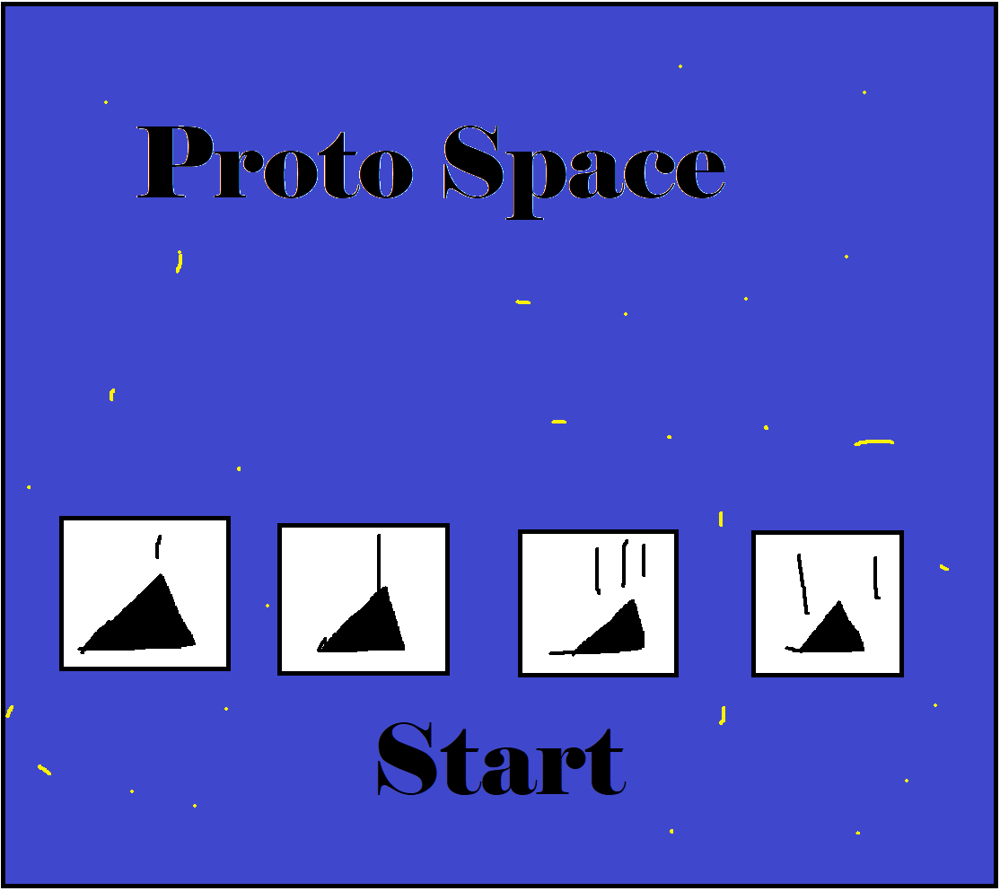
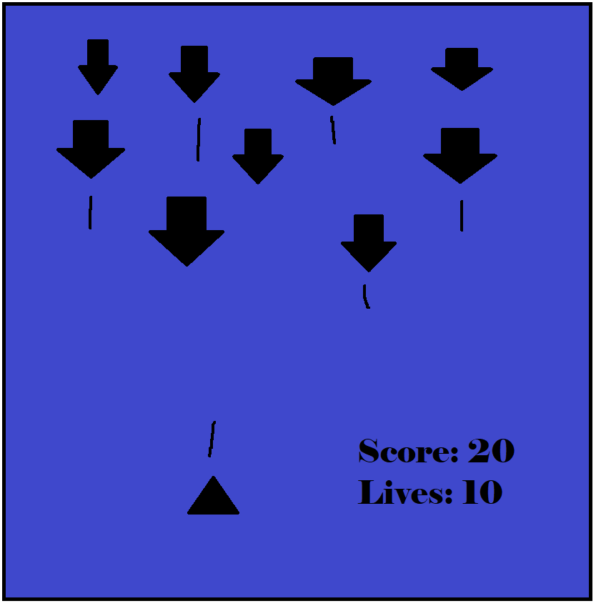

Alien Defender!
High Concept
It's Galaga but you can change how you ship fires!
Players will be able to choose between four different ships, each one having a different way of firing, from your standard single shot that vanishes after hitting an enemy to a piercing shot that goes through multiple enemies!
Genre
Arcade, Shooter
Platform
The game will be desktop only.
Story
The story is simple, you play as a space pilot who is trying to defend the planet from the invaders, something that you have probably heard many times. But you have a hard time choosing between the ships you are given. Choose between one of four ships, each one firing differently, and face off against the invaders.
Esthetics
Graphics style - Retro
Sound - 8-Bit, Techno, Looped
Scoring, shots fired, enemies being defeated, next level/level start, game over
Gameplay
Mechanics
Players are able to choose between four different ships, each one having a different way of firing. Enemies will also have different variations, from enemies that wrap around the screen to ones that chase you down.
Controls
Mouse for movement and Left Click to shootTeaching the game/New user experience aka "Onboarding"
The game will also start off easy, with only a few enemies spawning on the screen, with them gradually increasing as the rounds go on, more enemy types will also start to spawn
Player learning
Players need to learn what ship suits their gamestyle, as well as figure out what each type of enemy is able to do. Players will also attempt to beat their high score, using the strategies that they have learned.
Screenshots
Title Screen
Gameplay
Other
Something else you'd like to say that doesn't fit elsewhere. Also discuss any external libraries you might use. All libraries are subject to Professor approval.
About the developer(s)
My name is Alex Petty, I am a third year GDD student at Rochester Institute of Technology. I am skilled programming and level design. I enjoy playing videogames and hanging out with friends.
Documentation
Process
For Project 3 I decided to try and improve Circle Blast, one of the game ideas we were given as well as a homework assignment we had done previously. To start off, I tried to do the main thing I wanted to implement, the four different ships. It took me a while to implement them in, I was able to get the sprites loaded in fine, but I was unable to separate them between the four buttons, so no matter what you would always end up with the last ship laoded in. Then, I decided to make multiple classes that remove the current first ship loaded in and then loads in a new one with the different sprite. Once I got that working, I added in bool values to determine the shooting type of each ship. I then implemented in two new aliens, the Seeker, which chases down the player, and the Wrapper, which will warp to the opposite side of the screen if it hits a wall. I then set it up so your high score will be stored to local storage, and will change if you score higher than what you previously got. I had also replaced all of the sprites and sounds, though I kept the names of the sound effects so I could keep track of where everything was. The explosion sprite is also a little messed up because I could not get the exact size and location of the separate sprites.
Special Stuff
The thing I am most proud of was the different ship types. This made it possible to give the player four different options to play, with each one playing differently. With the ship object starting off with the first ship, I would change what sprite was used by creating a function for the 2nd, 3rd and 4th buttons that removes the original ship object and then adds in a new one using the new sprite. Thos same methods will also change what blast type each ship has.
Requirements
I had met most of the requirements. I had chosen the game of my choice to make, that being Circle Blast! No Javascript errors occur, luckily. I also kept the game window at a good size, that way it works on most computer screens. I had also changed the sound effects and sprites from the original assignment, that way it looks more unique. While their may be some things that I may have missed, I believe that I had made good progress on this project, making it feel like something I had made.
Overall Grade
I believe I got something between a B and A, I think I did good for the most part on the game. While there are some parts that I probably could do better on, I think I did very good on this project.